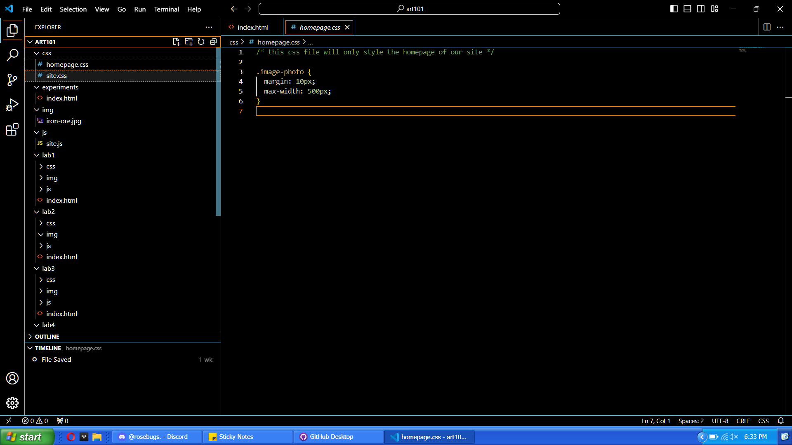
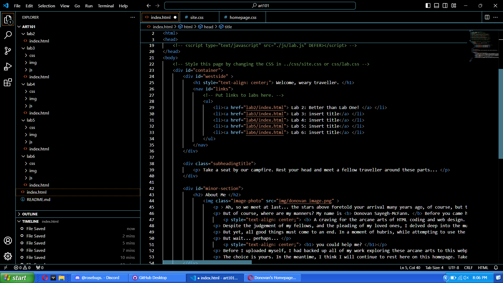
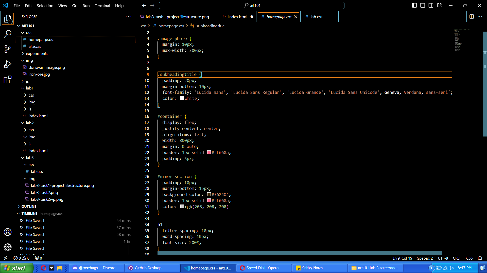
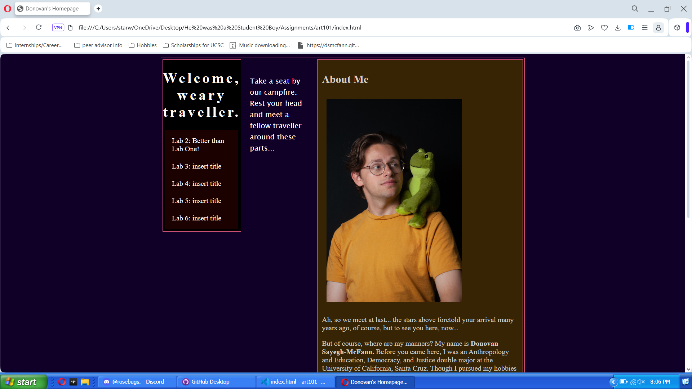
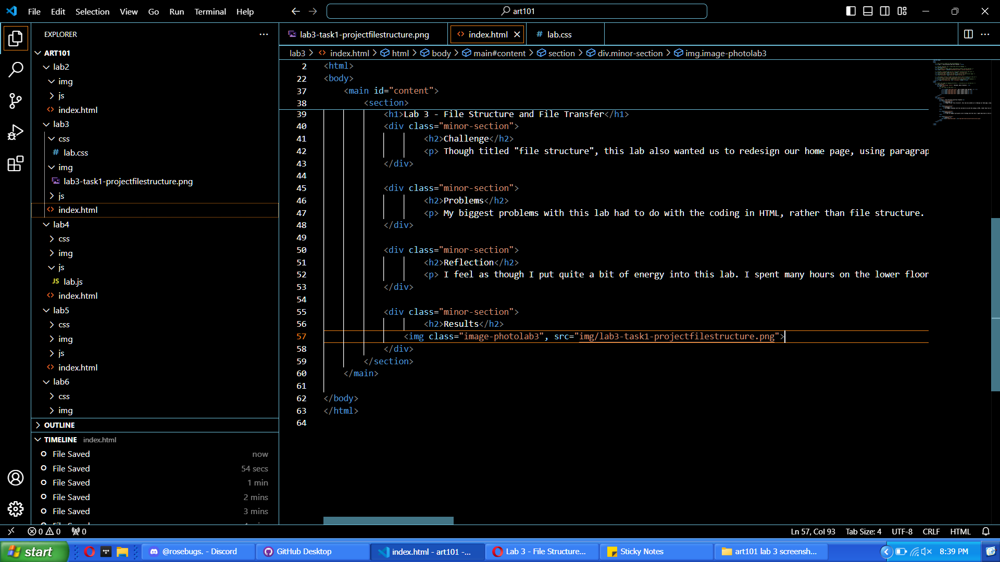
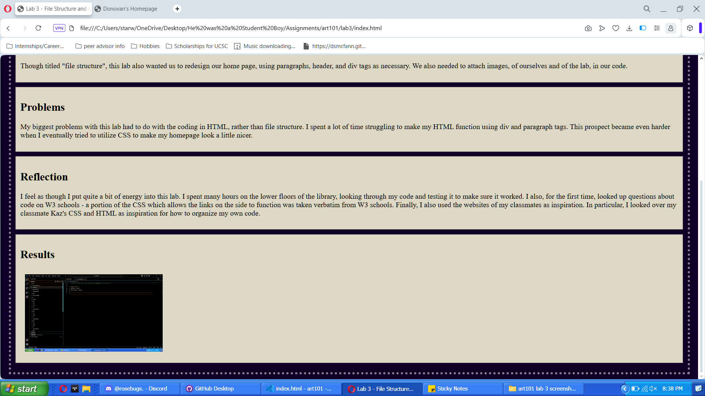

Lab 3 - File Structure and File Transfer
Challenge
This lab wanted us to create a local file structure and edit our homepage (and this page!) by adding index.html files. We were asked to use paragraphs, header, and div tags as necessary. We also needed to attach images, of ourselves and of the lab, in our code.
Problems
My biggest problems with this lab had to do with the coding in HTML, rather than file structure. I spent a lot of time struggling to make my HTML function using div and paragraph tags. This prospect became even harder when I eventually tried to utilize CSS to make my homepage look a little nicer.
Reflection
I feel as though I put quite a bit of energy into this lab. I spent many hours on the lower floors of the library, looking through my code and testing it to make sure it worked. I also, for the first time, looked up questions about code on W3 schools - a portion of the CSS which allows the links on the side to function was taken verbatim from W3 schools. Finally, I also used the websites of my classmates as inspiration. In particular, I looked over my classmate Kaz's CSS and HTML as inspiration for how to organize my own code.
Results
Task One: I made sure that my files were structured as they should be structured. Luckily, I had used the repository provided by the professor, which made this task significantly easier.
 Task 2/X: After making sure my files were organized nicely, I moved onto task two. I added an introduction to myself, including my interests and a photo, to the webpage of the website. I did this in my index.html file. At the same time, I also worked to make my website look nicer, implementing CSS as I went. Screenshots of both my index.html and my homepage.css file are above.
Task 2 (continued): This is how my webpage looked after adding the HTML and the CSS.
Task 3: I then moved onto the Lab 3 page. I added the links to the other labs from my homepage onto this page and provided information about what I found particularly interesting.
Task 3 (continued): How this looked on my webpage.